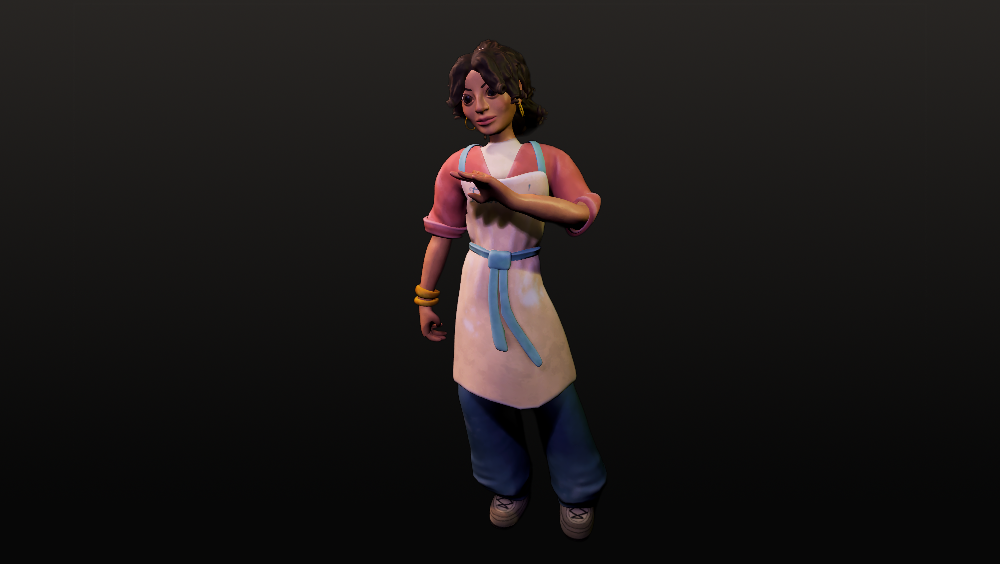
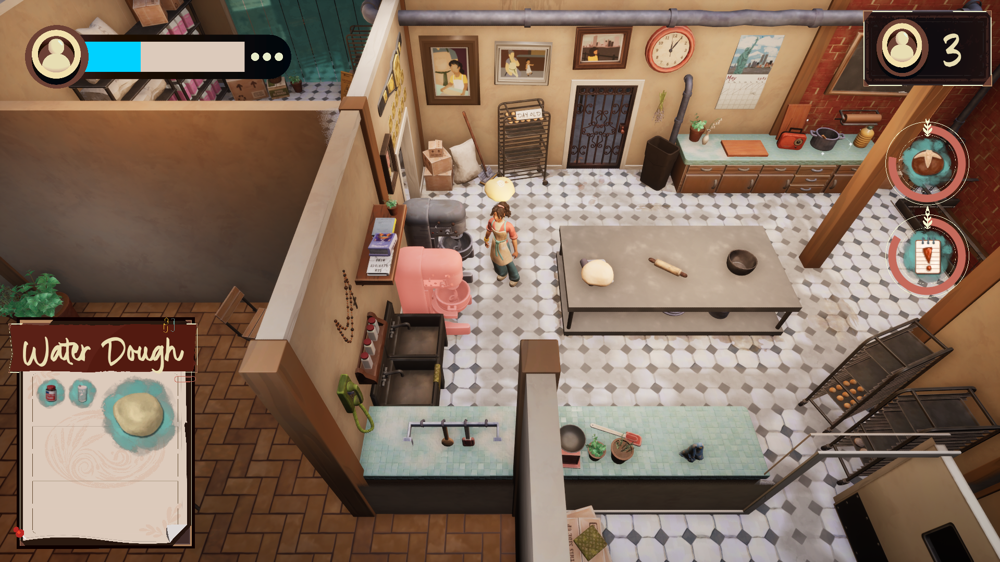
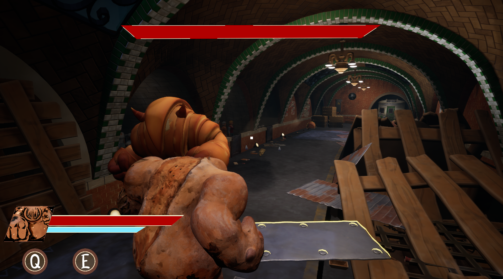
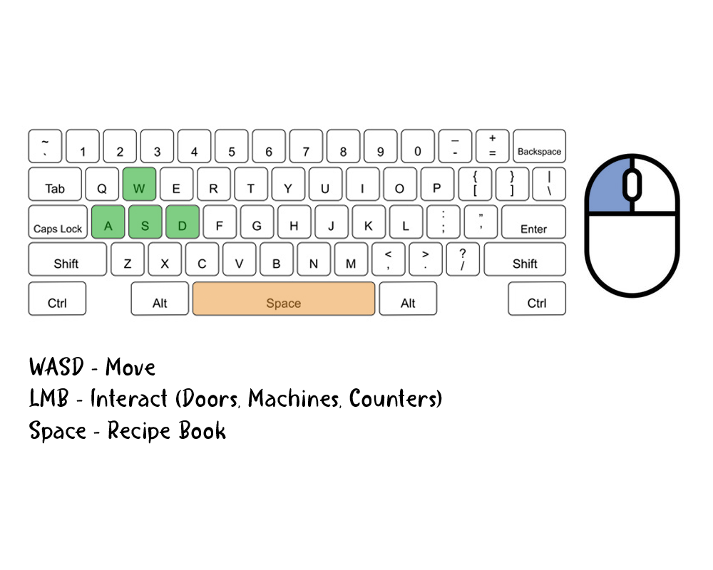
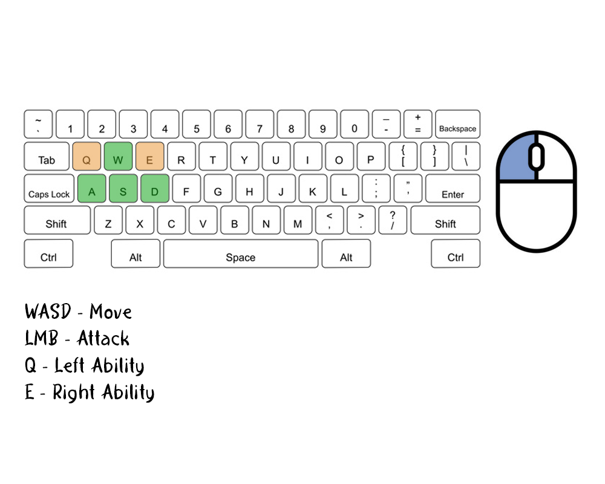

Game concept, 3 C's, audience, playstyle & market context
Bake to sell. Make to fight.
Knead by day to feed the city; bake by night to crush the arena.
In a world where your finest ingredients are either your greatest profit or your deadliest weapon, every recipe is a choice between a thriving shop and a winning fighter.
You run a bakery by day, and an illegal underground mech arena by night. Baking living bread machines that fight to promote your brand and bakery. Balance hands-on first-person mech combat with tactile, recipe-driven baking, and business management.
Players manage baking for their customers' orders and baking their bread golems during the day. After closing, you use your baked bread golem to fight other bakers' golems in the Dough Brawl Arena. Gain momentum and renown from your quality of service and fight outcomes and use them to improve your mechs or your bakery.
The audience we're aiming for are teen+, casual and core gamers, streamers/content creators, and people with interests in baking, mechs, fighting games, and sims. From the aesthetics of this game, we will attract mainly a female audience; but the fighting and automation will bring in a male audience as well.
The playstyle we're aiming for is the Mastermind player from the Brainhex Player Archetype and the Challenge, Fantasy, and Expression pleasures from LeBlanc's Taxonomy of Game Pleasure.
Shares the day/night split between business management and high-intensity action, but Dough or Die replaces exploration with competitive mech combat and brand-driven progression.
Shares tactile recipe-driven production and optimization, but Dough or Die turns the food into autonomous combat units instead of customer orders alone.
Shares hands-on ingredient experimentation and recipe mastery, but Dough or Die ties every recipe directly into real-time combat performance and risk.
Shares the feel of piloted mech combat and mobility, but Dough or Die focuses on semi-automated systems and preparation rather than pure skill shooting.

Francesca Panettiere is a third-generation immigrant raised by her Nonna. Warm, loud, and protective — she sings to her golems while baking them, and turns stone-faced the moment the arena fight begins.


Isometric Top-Down — player has no control over camera movement. Camera locks onto player movement to follow behind. Camera-facing walls use occlusion for visibility.
Third-Person — player controls camera completely. Camera reacts to certain environmental events.

